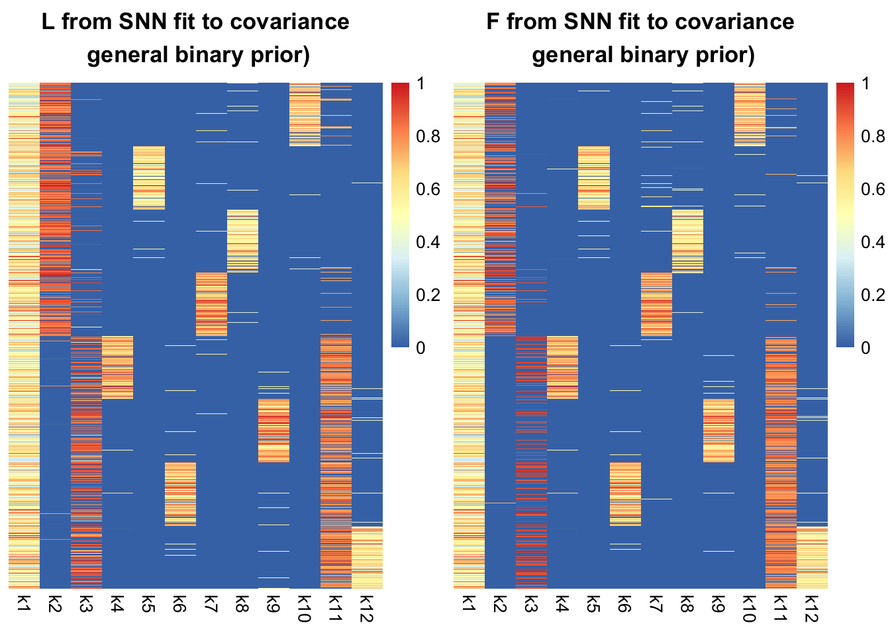

Motivating example for application of SNN to single cell cancer data
Yusha Liu
2022-1-17
Last updated: 2022-01-17
Checks: 7 0
Knit directory: single_cell_cancer/
This reproducible R Markdown analysis was created with workflowr (version 1.6.2). The Checks tab describes the reproducibility checks that were applied when the results were created. The Past versions tab lists the development history.
Great! Since the R Markdown file has been committed to the Git repository, you know the exact version of the code that produced these results.
Great job! The global environment was empty. Objects defined in the global environment can affect the analysis in your R Markdown file in unknown ways. For reproduciblity it’s best to always run the code in an empty environment.
The command set.seed(20211008) was run prior to running the code in the R Markdown file. Setting a seed ensures that any results that rely on randomness, e.g. subsampling or permutations, are reproducible.
Great job! Recording the operating system, R version, and package versions is critical for reproducibility.
Nice! There were no cached chunks for this analysis, so you can be confident that you successfully produced the results during this run.
Great job! Using relative paths to the files within your workflowr project makes it easier to run your code on other machines.
Great! You are using Git for version control. Tracking code development and connecting the code version to the results is critical for reproducibility.
The results in this page were generated with repository version c5c86b1. See the Past versions tab to see a history of the changes made to the R Markdown and HTML files.
Note that you need to be careful to ensure that all relevant files for the analysis have been committed to Git prior to generating the results (you can use wflow_publish or wflow_git_commit). workflowr only checks the R Markdown file, but you know if there are other scripts or data files that it depends on. Below is the status of the Git repository when the results were generated:
Ignored files:
Ignored: .DS_Store
Ignored: .Rhistory
Ignored: analysis/.DS_Store
Ignored: code/.DS_Store
Untracked files:
Untracked: analysis/twogroup_binary_general.Rmd
Untracked: code/functions.R
Untracked: code/simulations.R
Untracked: code/simulations3_more.R
Untracked: output/simulations3_more_XXt_fit1_sigma_05_rep1.rds
Untracked: output/simulations3_more_XXt_fit1_sigma_05_rep10.rds
Untracked: output/simulations3_more_XXt_fit1_sigma_05_rep2.rds
Untracked: output/simulations3_more_XXt_fit1_sigma_05_rep3.rds
Untracked: output/simulations3_more_XXt_fit1_sigma_05_rep4.rds
Untracked: output/simulations3_more_XXt_fit1_sigma_05_rep5.rds
Untracked: output/simulations3_more_XXt_fit1_sigma_05_rep6.rds
Untracked: output/simulations3_more_XXt_fit1_sigma_05_rep7.rds
Untracked: output/simulations3_more_XXt_fit1_sigma_05_rep8.rds
Untracked: output/simulations3_more_XXt_fit1_sigma_05_rep9.rds
Untracked: output/simulations3_more_XXt_fit1_sigma_1_rep1.rds
Untracked: output/simulations3_more_XXt_fit1_sigma_1_rep10.rds
Untracked: output/simulations3_more_XXt_fit1_sigma_1_rep2.rds
Untracked: output/simulations3_more_XXt_fit1_sigma_1_rep3.rds
Untracked: output/simulations3_more_XXt_fit1_sigma_1_rep4.rds
Untracked: output/simulations3_more_XXt_fit1_sigma_1_rep5.rds
Untracked: output/simulations3_more_XXt_fit1_sigma_1_rep6.rds
Untracked: output/simulations3_more_XXt_fit1_sigma_1_rep7.rds
Untracked: output/simulations3_more_XXt_fit1_sigma_1_rep8.rds
Untracked: output/simulations3_more_XXt_fit1_sigma_1_rep9.rds
Untracked: output/simulations3_more_XXt_fit2_sigma_05_hist.pdf
Untracked: output/simulations3_more_XXt_fit2_sigma_05_rep1.rds
Untracked: output/simulations3_more_XXt_fit2_sigma_05_rep10.rds
Untracked: output/simulations3_more_XXt_fit2_sigma_05_rep2.rds
Untracked: output/simulations3_more_XXt_fit2_sigma_05_rep3.rds
Untracked: output/simulations3_more_XXt_fit2_sigma_05_rep4.rds
Untracked: output/simulations3_more_XXt_fit2_sigma_05_rep5.rds
Untracked: output/simulations3_more_XXt_fit2_sigma_05_rep6.rds
Untracked: output/simulations3_more_XXt_fit2_sigma_05_rep7.rds
Untracked: output/simulations3_more_XXt_fit2_sigma_05_rep8.rds
Untracked: output/simulations3_more_XXt_fit2_sigma_05_rep9.rds
Untracked: output/simulations3_more_XXt_fit2_sigma_1_hist.pdf
Untracked: output/simulations3_more_XXt_fit2_sigma_1_rep1.rds
Untracked: output/simulations3_more_XXt_fit2_sigma_1_rep10.rds
Untracked: output/simulations3_more_XXt_fit2_sigma_1_rep2.rds
Untracked: output/simulations3_more_XXt_fit2_sigma_1_rep3.rds
Untracked: output/simulations3_more_XXt_fit2_sigma_1_rep4.rds
Untracked: output/simulations3_more_XXt_fit2_sigma_1_rep5.rds
Untracked: output/simulations3_more_XXt_fit2_sigma_1_rep6.rds
Untracked: output/simulations3_more_XXt_fit2_sigma_1_rep7.rds
Untracked: output/simulations3_more_XXt_fit2_sigma_1_rep8.rds
Untracked: output/simulations3_more_XXt_fit2_sigma_1_rep9.rds
Untracked: output/simulations3_more_XXt_fit3_sigma_05_rep1.rds
Untracked: output/simulations3_more_XXt_fit3_sigma_05_rep10.rds
Untracked: output/simulations3_more_XXt_fit3_sigma_05_rep2.rds
Untracked: output/simulations3_more_XXt_fit3_sigma_05_rep3.rds
Untracked: output/simulations3_more_XXt_fit3_sigma_05_rep4.rds
Untracked: output/simulations3_more_XXt_fit3_sigma_05_rep5.rds
Untracked: output/simulations3_more_XXt_fit3_sigma_05_rep6.rds
Untracked: output/simulations3_more_XXt_fit3_sigma_05_rep7.rds
Untracked: output/simulations3_more_XXt_fit3_sigma_05_rep8.rds
Untracked: output/simulations3_more_XXt_fit3_sigma_05_rep9.rds
Untracked: output/simulations3_more_XXt_fit3_sigma_1_rep1.rds
Untracked: output/simulations3_more_XXt_fit3_sigma_1_rep10.rds
Untracked: output/simulations3_more_XXt_fit3_sigma_1_rep2.rds
Untracked: output/simulations3_more_XXt_fit3_sigma_1_rep3.rds
Untracked: output/simulations3_more_XXt_fit3_sigma_1_rep4.rds
Untracked: output/simulations3_more_XXt_fit3_sigma_1_rep5.rds
Untracked: output/simulations3_more_XXt_fit3_sigma_1_rep6.rds
Untracked: output/simulations3_more_XXt_fit3_sigma_1_rep7.rds
Untracked: output/simulations3_more_XXt_fit3_sigma_1_rep8.rds
Untracked: output/simulations3_more_XXt_fit3_sigma_1_rep9.rds
Untracked: output/simulations3_update_XXt_fit3_sigma_v1.Rds
Untracked: output/simulations3_update_XXt_fit3_sigma_v2.Rds
Unstaged changes:
Modified: code/simulations3_update.R
Note that any generated files, e.g. HTML, png, CSS, etc., are not included in this status report because it is ok for generated content to have uncommitted changes.
These are the previous versions of the repository in which changes were made to the R Markdown (analysis/presentation.Rmd) and HTML (docs/presentation.html) files. If you’ve configured a remote Git repository (see ?wflow_git_remote), click on the hyperlinks in the table below to view the files as they were in that past version.
| File | Version | Author | Date | Message |
|---|---|---|---|---|
| Rmd | c5c86b1 | yushaliu | 2022-01-17 | Add a motivating example for illustration |
Summary
We present a toy example which illustrates the characteristics observed in single cell cancer data, which demonstrate strong inter-patient heterogeneity but still share similarities among patients.
Simulation setup
library(Matrix)
library(ebnm)
library(flashier)
library(pheatmap)
library(gridExtra)
library(tidyverse)
### load in simulated loadings and factors
L <- readRDS("data/model.rds")$L
F <- readRDS("data/model.rds")$F
F[,1] <- F[,1] - 10
### plot the poplulation factorization of truth, where F is orthogonal across columns
L.pop <- L[, 1:9]
F.pop <- F[, 1:9]
F.pop[,2:5] <- F[,2:5] + F[,10]
F.pop[,6:9] <- F[,6:9] + F[,11]
plt.L <- pheatmap(L.pop[,-1], show_rownames = FALSE, cluster_rows = FALSE, cluster_cols = FALSE,
main = "True L\n population factorization", silent = TRUE)
plt.F <- pheatmap(F.pop[,-1], show_rownames = FALSE, cluster_rows = FALSE, cluster_cols = FALSE,
main = "True F\n population factorization", silent = TRUE)
grid.arrange(plt.L$gtable, plt.F$gtable, ncol=2)### plot the drift factorization of truth, where F is orthogonal across columns
plt.L <- pheatmap(L[,-1], show_rownames = FALSE, cluster_rows = FALSE, cluster_cols = FALSE, main = "True L\n drift factorization", silent = TRUE)
plt.F <- pheatmap(F[,-1], show_rownames = FALSE, cluster_rows = FALSE, cluster_cols = FALSE, main = "True F\n drift factorization", silent = TRUE)
grid.arrange(plt.L$gtable, plt.F$gtable, ncol=2)### simulate the data
set.seed(100)
X <- L %*% t(F) + matrix(rnorm(800*2000, 0, 1), nrow=800, ncol=2000)
XXt <- X %*% t(X)/ncol(X)Define functions to fit SNN
source("code/functions.R")Define plot functions
# plot posterior mean of L and F after rescaling
plotLF <- function(fit, title){
fit.L <- fit$loadings.pm[[1]][, fit$pve > 0]
fit.L <- t(t(fit.L)/apply(fit.L, 2, max))
colnames(fit.L) <- paste0("k", 1:ncol(fit.L))
fit.F <- fit$loadings.pm[[2]][, fit$pve > 0]
fit.F <- t(t(fit.F)/apply(fit.F, 2, max))
colnames(fit.F) <- paste0("k", 1:ncol(fit.F))
plt.L <- pheatmap(fit.L, cluster_rows = FALSE, cluster_cols = FALSE, silent = TRUE, main=title[1])
plt.F <- pheatmap(fit.F, cluster_rows = FALSE, cluster_cols = FALSE, silent = TRUE, main=title[2])
grid.arrange(plt.L$gtable, plt.F$gtable, ncol=2)
}Fit SNN to the data matrix
As can be seen, SNN fit to the cell \(\times\) gene data matrix (point-exponential prior on loadings, point-Laplace prior on factors) yields a population factorization, in which the loadings fail to reveal the similarities among patients.
### initialize by running flash without constraints on L
fit.pn <- flash.init(X, S = 1/sqrt(nrow(X)), var.type = 2) %>% flash.add.greedy(Kmax = 11, prior.family = prior.point.laplace()) %>% flash.backfit()Adding factor 1 to flash object...
Adding factor 2 to flash object...
Adding factor 3 to flash object...
Adding factor 4 to flash object...
Adding factor 5 to flash object...
Adding factor 6 to flash object...
Adding factor 7 to flash object...
Adding factor 8 to flash object...
Adding factor 9 to flash object...
Factor doesn't significantly increase objective and won't be added.
Wrapping up...
Done.
Backfitting 8 factors (tolerance: 2.38e-02)...
Difference between iterations is within 1.0e+02...
Difference between iterations is within 1.0e+01...
Difference between iterations is within 1.0e+00...
Difference between iterations is within 1.0e-01...
Difference between iterations is within 1.0e-02...
Wrapping up...
Done.snn.init <- init.snn.LL(fit.pn)
### run SNN with point exponential prior on L
fit.snn <- flash.init(X, S = 1/sqrt(nrow(X)), var.type = 2
) %>% flash.init.factors(EF = snn.init, prior.family = c(as.prior(ebnm::ebnm_point_exponential, sign = 1), prior.point.laplace())
) %>% flash.backfit()Backfitting 15 factors (tolerance: 2.38e-02)...
Difference between iterations is within 1.0e+03...
Difference between iterations is within 1.0e+02...
Difference between iterations is within 1.0e+01...
Difference between iterations is within 1.0e+00...
Difference between iterations is within 1.0e-01...
Difference between iterations is within 1.0e-02...
Wrapping up...
Done.### plot the estimated L
fit.L <- fit.snn$loadings.pm[[1]][, fit.snn$pve > 0]
fit.L <- t(t(fit.L)/apply(fit.L, 2, max))
colnames(fit.L) <- paste0("k", 1:ncol(fit.L))
pheatmap(fit.L, cluster_rows = FALSE, cluster_cols = FALSE, main="L from SNN fit to data matrix")Fit SNN to the covariance matrix with a point-exponential prior
To encourage a drift factorization in which the loadings reveal similarities among patients and are thus more informative, we fit SNN to the cell \(\times\) cell covariance matrix to estimate the loadings first, and then fit SNN to the cell \(\times\) gene data matrix by keeping loadings fixed.
### fit unconstrained flash with point Laplace prior to XXt while ignoring the diagonal component for now
fit.cov <- flash.init(XXt, var.type = 0) %>% flash.add.greedy(Kmax = 11, prior.family = prior.point.laplace()) %>% flash.backfit()Adding factor 1 to flash object...
Adding factor 2 to flash object...
Adding factor 3 to flash object...
Adding factor 4 to flash object...
Adding factor 5 to flash object...
Adding factor 6 to flash object...
Adding factor 7 to flash object...
Adding factor 8 to flash object...
Adding factor 9 to flash object...
Adding factor 10 to flash object...
Adding factor 11 to flash object...
Wrapping up...
Done.
Backfitting 11 factors (tolerance: 9.54e-03)...
Difference between iterations is within 1.0e+01...
Difference between iterations is within 1.0e+00...
Difference between iterations is within 1.0e-01...
Difference between iterations is within 1.0e-02...
Wrapping up...
Done.### fit unconstrained flash again with the diagonal component
fit.cov <- fit.ebcovmf(dat=XXt, fl=fit.cov, prior=prior.point.laplace())$flBackfitting 11 factors (tolerance: 9.54e-03)...
Difference between iterations is within 1.0e+03...
Difference between iterations is within 1.0e+02...
Difference between iterations is within 1.0e+01...
Difference between iterations is within 1.0e+00...
Difference between iterations is within 1.0e-01...
Difference between iterations is within 1.0e-02...
Wrapping up...
Done.
Backfitting 11 factors (tolerance: 9.54e-03)...
Difference between iterations is within 1.0e+00...
Difference between iterations is within 1.0e-01...
Difference between iterations is within 1.0e-02...
Wrapping up...
Done.### initialize the nonnegative fit based on the unconstrained flash fit
snn.cov.init <- init.snn.cov(fit.cov)
### fit flash with point exponential prior to XXt while ignoring the diagonal component for now
fit.cov <- flash.init(XXt, var.type = 0) %>% flash.init.factors(EF=snn.cov.init, prior.family=as.prior(ebnm::ebnm_point_exponential, sign = 1))
### fit flash again with the diagonal component
fit.cov <- fit.ebcovmf(dat=XXt, fl=fit.cov, prior=as.prior(ebnm::ebnm_point_exponential, sign = 1))$flBackfitting 21 factors (tolerance: 9.54e-03)...
Difference between iterations is within 1.0e+03...
Difference between iterations is within 1.0e+02...
Difference between iterations is within 1.0e+01...
Difference between iterations is within 1.0e+00...
Difference between iterations is within 1.0e-01...
Difference between iterations is within 1.0e-02...
Wrapping up...
Done.
Backfitting 16 factors (tolerance: 9.54e-03)...
Difference between iterations is within 1.0e-01...
Difference between iterations is within 1.0e-02...
Wrapping up...
Done.### plot the estimated L and F
plotLF(fit.cov, title=c("L from SNN fit to covariance\n point exponential prior)", "F from SNN fit to covariance\n point exponential prior)"))
Fit SNN to the covariance matrix with a generalized binary prior
In the SNN fit to the covariance matrix with a point-exponential prior, the loadings do reveal similaries among patients, but the solution still looks quite noisy and is not close to the drift factorization desired.
To fix this, we instead fit SNN to the covariance matrix with a generalized binary prior, which can be expressed as \[\begin{align} g \sim (1-\pi) \delta_0 + \pi N_{[0, \infty)}(\mu, \sigma^2), \end{align}\] where the truncated normal component is highly spiky, i.e., \(\frac{\mu}{\sigma}\) is large.
### fit flash with generalized binary prior to XXt while ignoring the diagonal component for now
fit.cov <- flash.init(XXt, var.type = 0) %>% flash.init.factors(EF=snn.cov.init, prior.family=as.prior(ebnm_binary_general, sign = 1))
### fit flash again with the diagonal component
fit.cov <- fit.ebcovmf(dat=XXt, fl=fit.cov, prior=as.prior(ebnm_binary_general, sign = 1))$flBackfitting 21 factors (tolerance: 9.54e-03)...
Difference between iterations is within 1.0e+03...
Difference between iterations is within 1.0e+02...
Difference between iterations is within 1.0e+01...
Difference between iterations is within 1.0e+00...
Difference between iterations is within 1.0e-01...
Difference between iterations is within 1.0e-02...
Wrapping up...
Done.
Backfitting 12 factors (tolerance: 9.54e-03)...
Difference between iterations is within 1.0e+00...
Difference between iterations is within 1.0e-01...
Difference between iterations is within 1.0e-02...
Wrapping up...
Done.### plot the estimated L and F
plotLF(fit.cov, title=c("L from SNN fit to covariance\n general binary prior)", "F from SNN fit to covariance\n general binary prior)"))
sessionInfo()R version 4.1.0 (2021-05-18)
Platform: x86_64-apple-darwin17.0 (64-bit)
Running under: macOS Big Sur 10.16
Matrix products: default
BLAS: /Library/Frameworks/R.framework/Versions/4.1/Resources/lib/libRblas.dylib
LAPACK: /Library/Frameworks/R.framework/Versions/4.1/Resources/lib/libRlapack.dylib
locale:
[1] en_US.UTF-8/en_US.UTF-8/en_US.UTF-8/C/en_US.UTF-8/en_US.UTF-8
attached base packages:
[1] stats graphics grDevices utils datasets methods base
other attached packages:
[1] forcats_0.5.1 stringr_1.4.0 dplyr_1.0.6 purrr_0.3.4
[5] readr_2.0.2 tidyr_1.1.3 tibble_3.1.2 ggplot2_3.3.4
[9] tidyverse_1.3.1 gridExtra_2.3 pheatmap_1.0.12 flashier_0.2.7
[13] ebnm_0.1-52 Matrix_1.3-4 workflowr_1.6.2
loaded via a namespace (and not attached):
[1] httr_1.4.2 sass_0.4.0 jsonlite_1.7.2 splines_4.1.0
[5] modelr_0.1.8 bslib_0.2.5.1 assertthat_0.2.1 horseshoe_0.2.0
[9] highr_0.9 mixsqp_0.3-43 deconvolveR_1.2-1 cellranger_1.1.0
[13] yaml_2.2.1 pillar_1.6.1 backports_1.2.1 lattice_0.20-44
[17] glue_1.4.2 digest_0.6.27 RColorBrewer_1.1-2 promises_1.2.0.1
[21] rvest_1.0.2 colorspace_2.0-1 htmltools_0.5.1.1 httpuv_1.6.1
[25] pkgconfig_2.0.3 invgamma_1.1 broom_0.7.9 haven_2.4.3
[29] scales_1.1.1 whisker_0.4 later_1.2.0 tzdb_0.1.2
[33] git2r_0.28.0 generics_0.1.0 ellipsis_0.3.2 withr_2.4.2
[37] ashr_2.2-47 cli_3.0.1 readxl_1.3.1 magrittr_2.0.1
[41] crayon_1.4.1 evaluate_0.14 fs_1.5.0 fansi_0.5.0
[45] xml2_1.3.2 truncnorm_1.0-8 tools_4.1.0 hms_1.1.0
[49] REBayes_2.2 lifecycle_1.0.0 reprex_2.0.1 trust_0.1-8
[53] munsell_0.5.0 irlba_2.3.3 compiler_4.1.0 jquerylib_0.1.4
[57] rlang_0.4.11 grid_4.1.0 rstudioapi_0.13 rmarkdown_2.11
[61] gtable_0.3.0 DBI_1.1.1 R6_2.5.0 lubridate_1.8.0
[65] knitr_1.33 utf8_1.2.1 rprojroot_2.0.2 stringi_1.6.2
[69] parallel_4.1.0 SQUAREM_2021.1 Rcpp_1.0.7 vctrs_0.3.8
[73] dbplyr_2.1.1 tidyselect_1.1.1 xfun_0.25